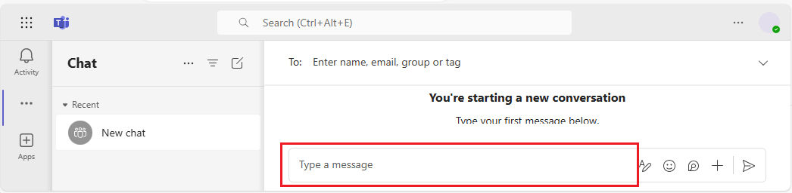

Business Central Datensätze und Seitenlinks in Microsoft Teams teilen
GILT FÜR: Business Central Online
Business Central bietet einige Möglichkeiten, Daten aus Business Central direkt in einer Microsoft Teams-Unterhaltung zu teilen:
Wenn Sie die Business Central-App in Teams installiert haben, können Sie eine interaktive Karte des Business Central-Datensatzes in eine Teams-Unterhaltung einbinden.
Mit oder ohne die installierte Business Central-App können Sie einen Link von Seiten in Business Central in einer Teams-Unterhaltung teilen.
In den folgenden Abschnitten werden die verschiedenen Möglichkeiten im Detail beschrieben.
Einbinden und Anzeigen einer Business Central Karte in einer Teams Unterhaltung
Mit der Business Central-App für Teams können Sie einen Link aus einem beliebigen Business Central-Datensatz, z.B. einem Debitor oder Verkaufsauftrag, kopieren und in eine Teams-Unterhaltung einfügen. Die App verbindet Microsoft Teams mit Ihren Geschäftsdaten in Business Central. Anschließend erweitert sie den Link zu einer kompakten, interaktiven Karte, die Informationen über den Datensatz anzeigt. Wenn Sie sich in der Unterhaltung befinden, können Sie und Ihre Mitarbeiter weitere Details zum Datensatz anzeigen, Daten bearbeiten und Maßnahmen ergreifen—ohne Teams zu verlassen.
{kind=link}
Voraussetzungen
- Sie haben Zugriff auf Microsoft Teams.
- Sie haben die Business Central-App in Teams installiert. Weitere Informationen finden Sie unter Die Business Central-App für Microsoft Teams installieren.
Hinweis
Alle Teilnehmer einer Teams-Unterhaltung können Karten für Business Central-Datensätze anzeigen, die Sie an die Unterhaltung senden. Um weitere Details zu Datensätzen anzuzeigen (durch Verwenden der Schaltflächen Details oder Pop-out auf einer Karte), benötigen diese jedoch Zugriff auf Business Central. Weitere Informationen finden Sie unter Integration verwalten Microsoft Teams.
Eine Business Central-Karte in eine Teams-Unterhaltung einfügen
- Verwenden Sie Ihren Browser, um sich bei Business Central anzumelden.
Öffnen Sie den Datensatz, den Sie teilen möchten.
Die App dient zum Anzeigen einer Karte für fast alle Typen von Business Central-Seiten. Sie bietet jedoch die beste Umgebung, wenn es für Seiten verwendet wird, die einen einzelnen Datensatz anzeigen, wie z. B. einen Artikel, einen Kunden oder einen Verkaufsauftrag.
Kopieren Sie den Link auf die Seite.
Es gibt zwei Möglichkeiten, den Link zu kopieren. Die einfachste und bevorzugte Weise ist die Auswahl von Freigeben
 > Link kopieren. Die andere Möglichkeit besteht darin, die gesamte URL direkt aus der Adressleiste des Browsers zu kopieren.
> Link kopieren. Die andere Möglichkeit besteht darin, die gesamte URL direkt aus der Adressleiste des Browsers zu kopieren.- Wechseln Sie zu Teams und beginnen Sie eine Unterhaltung, die mit einer Person, einer Personengruppe oder einem Teamkanal geführt werden kann.
Fügen Sie den Link (die URL) in das Nachrichtenfeld ein, in dem Sie die Nachricht erstellen.

Tipp
Wenn Sie beispielsweise die Meldung Business Central möchte eine Vorschau dieses Links anzeigen. erhalten, bedeutet dies, dass Sie die Business Central-App für Teams nicht installiert haben. Um die App zu installieren, wählen Sie Vorschauversion zeigen aus, und folgen Sie den Anweisungen.
Hinweis
Je nach Ihrer Business Central-Version: Wenn Sie zum ersten Mal einen Link in eine Unterhaltung einfügen, werden Sie unter Umständen aufgefordert, sich in Business Central anzumelden und der App die Zustimmung zum Datenabruf zu geben. Folgen Sie einfach den Anweisungen auf dem Bildschirm. Sie müssen diesen Schritt nur einmal ausführen.
- Warten Sie einen Moment, während eine Karte im Nachrichtenfeld generiert wird.
- Wenn die Karte angezeigt wird, überprüfen Sie den Inhalt der Karte sorgfältig auf sensible Informationen, bevor Sie die Nachricht senden. Dieser Schritt ist wichtig, da nach dem Senden der Nachricht jeder Unterhaltungsteilnehmer die Karte sehen kann.
Wenn Sie mit der Karte zufrieden sind, wählen Sie Senden aus, um sie der Unterhaltung hinzuzufügen.
Tipp
Nachdem die Karte angezeigt wird und bevor Sie Senden auswählen, können Sie die eingefügte URL bei Bedarf löschen.
- Um weitere Details anzuzeigen oder Änderungen an der Karte vorzunehmen, wählen Sie Details aus. Weitere Informationen finden Sie im nächsten Abschnitt.
{kind=link}
Kartendetails anzeigen
Sobald eine Karte an ein Gespräch gesendet wurde, können alle Teilnehmer mit den ordnungsgemäßen Berechtigungen Einzelheiten auswählen, um ein Fenster zu öffnen, in dem weitere Informationen zum Datensatz angezeigt werden— und möglicherweise Änderungen am Datensatz vornehmen. Es spielt keine Rolle, ob Sie die Karte senden oder die Karte empfangen. Die Funktion Details ist besonders für Empfänger nützlich, da sie ihnen schnell präzise und zielgerichtete Informationen über den Datensatz liefert.
Das Detailfenster ähnelt der Anzeige in Business Central, konzentriert sich jedoch auf die Seite oder den Datensatz, um den es auf der Karte geht. Wenn Sie mit dem Anzeigen und Vornehmen von Änderungen fertig sind, schließen Sie das Fenster, um zur Unterhaltung in Teams zurückzukehren.
Hier sind einige Dinge zu beachten, wenn Sie mit den Kartendetails arbeiten:
- Um die Kartendetails zu öffnen, müssen Benutzer die Berechtigung für die Seite und ihre Daten in Business Central. haben.
- Karten in Team-Chats werden nicht automatisch auf Änderungen aktualisiert. Alle Änderungen, die Sie an einem Datensatz im Detailfenster speichern, werden in Business Central. gespeichert. Auf der Karte in Teams werden die Änderungen in der Konvertierung jedoch erst angezeigt, wenn Sie den Link erneut einfügen.
Erfahren Sie mehr über die Arbeit mit Karten und Karte-Details in den Teams-FAQs.
Einen Link zu einer Seite von Business Central an Teams weitergeben
Direkt von den meisten Sammlungsseiten, wie der Seite Elemente, und Detailseiten, wie der Karte Elemente, können Sie einen Link zu der Seite an bestimmte Empfänger in einer Unterhaltung in Teams senden. So können Sie beispielsweise einen Link zu einer gefilterten Ansicht Ihrer Datensätze freigeben. Die Empfänger können dann den Link auswählen, um die Seite in Business Central. zu öffnen.
{kind=link}
Voraussetzungen
- Sie haben Zugriff auf Microsoft Teams.
(Optional) Sie haben die App Business Central in Teams installiert.
Wenn die App installiert ist, enthalten Nachrichten, die Sie mit dem Link versenden, auch eine kompakte Karte für die Seite. Weitere Informationen zum Installieren der App finden Sie unter Installieren Sie die Business Central App für Microsoft Teams.
Einen Link freigeben
- Öffnen Sie in Business Central, die Seite, die Sie teilen möchten.
- Wählen Sie oben auf der Seite die Aktion Symbol und dann Für Teams freigeben.
- Falls Sie dazu aufgefordert werden, melden Sie sich bei Teams mit Ihrem Benutzernamen und Kennwort an.
- Geben Sie auf der Seite Für Teams freigeben den Namen einer Person, einer Gruppe oder eines Kanals ein, an den Sie die Nachricht senden möchten.
Das Nachrichtenfeld enthält einen Link zu dieser Seite. Wenn die App Business Central für Teams installiert ist, wird im Nachrichtenfeld auch eine Karte für den verlinkten Datensatz oder die verlinkte Seite angezeigt.
Fügen Sie weitere Informationen hinzu, wenn Sie möchten, und wählen Sie dann Freigeben.
- Der Link wurde nun geteilt. Wenn Sie zu der Unterhaltung gehen möchten, wählen Sie Zu Teams gehen.
Ähnliche Informationen
Übersicht über die Integration von Business Central und Microsoft Teams
Die App Business Central für Microsoft Teams installieren
Teams FAQ
Suchen Sie nach Debitoren, Kreditoren und anderen Kontakten aus Microsoft Teams
Ändern der Firma und anderer Einstellungen in Teams
Teams Problembehebung
Entwickeln für Teams Integration
Starten Sie eine kostenlose Testversion!
Kostenlose E-Learning-Module für Business Central finden Sie hier